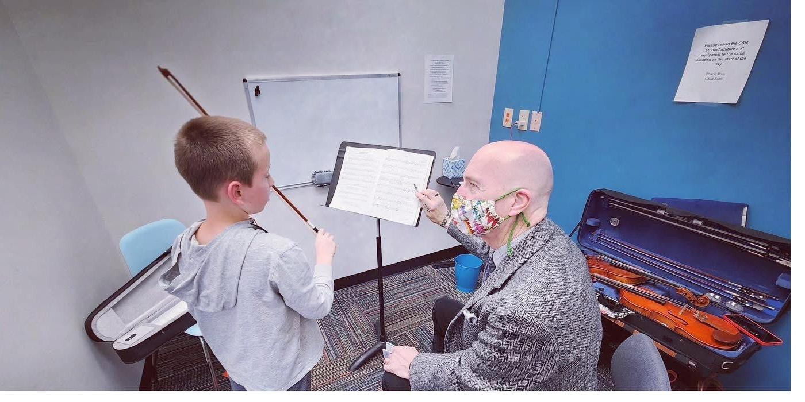

Private violin, viola, and cello lessons for beginner to advanced students, ages 5 and up, at five Greater Cincinnati locations.
Violin, viola, and cello ask a lot from a young student: posture, listening, patience, coordination, and a careful ear. CSM string students work with teachers who understand how to build those early habits without losing the joy of making music. The care taken in the early years can carry a student for a long time.
We also offer viola instruction for students who want the instrument's distinctive lower voice — and for violin students who discover a preference for the ensemble's inner range. With string teachers across all five locations, CSM gives families more ways to find the right teacher, schedule, and starting point. Every lesson is private, every plan is built around the student, and every student has clear goals to work toward.

"Our daughter has taken both violin and piano at CSM for a year and enjoyed every lesson. She was even able to take extra violin lessons in preparation for a high school violin event and received the highest scores possible!"
String students have chances to perform throughout the year, giving families a chance to hear the progress that often happens slowly, week by week. No student is pushed onto stage before they are ready. Most ask when the next one is.
All violin and viola lessons are private, one-on-one sessions. Lesson length is chosen based on the student's age, focus, and goals. Young beginners typically start at 30 minutes — enough time to work deliberately without losing focus. Students building a serious repertoire benefit from longer sessions.
Lessons run seven days a week across our five locations. Siblings can schedule back-to-back at the same location — a practical detail that matters when you are coordinating multiple kids and a full week.
Book IntroStudents perform when they're ready. No pressure, no competition. Most students perform within their first year.
See the Recital ScheduleAt any of our five Greater Cincinnati locations. No long-term commitment to start — enrollment is month-to-month.
Book Intro